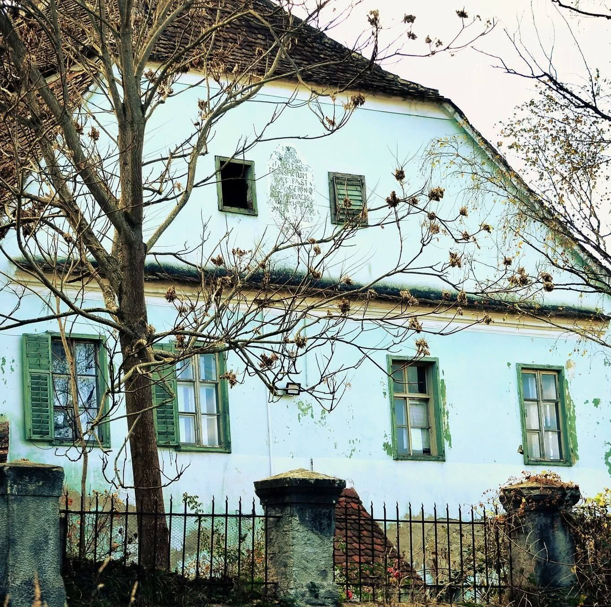
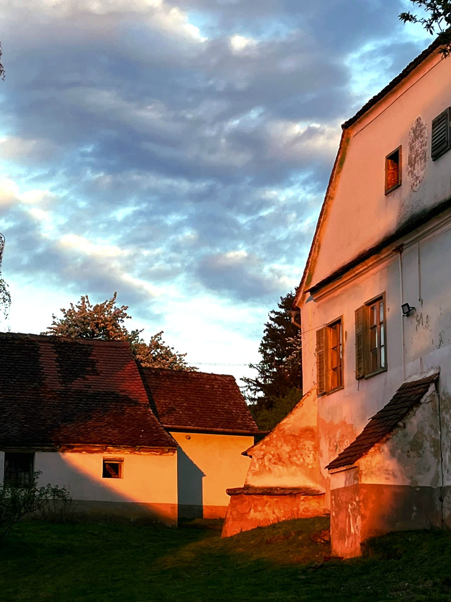
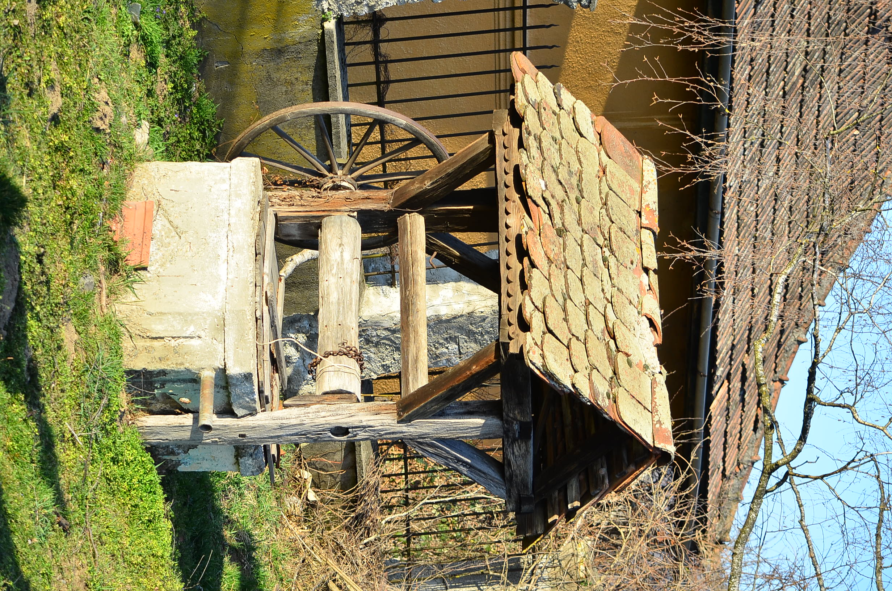

Amnaș · Sibiu · Est. 2026
Patrimoniu · Comunitate · Educație

Casa parohială evanghelică, Amnaș, Jud. Sibiu — centrul activității asociației
Asociația Hamlesch 1309 s-a constituit în 2026 pentru a proteja și restaura patrimoniul cultural și construit din Amnaș.
Numele evocă denumirea medievală a localității — Hamlesch, atestată din 1309 — și continuitatea istorică a locului.
Suntem o organizație locală, fără scop de profit, dedicată comunității și vieții culturale din Amnaș.
Lucrăm pe trei direcții care leagă patrimoniul de viața de zi cu zi a comunității.
Protejarea, restaurarea și conservarea clădirilor istorice din Amnaș — inclusiv casa parohială și Biserica Evanghelică — cu respectarea tehnicilor tradiționale de intervenție.
Organizarea de activități culturale, șezători, târguri, expoziții și ateliere care aduc oamenii împreună și revitalizează viața socială a satului.
Inițiative educaționale pentru copii și tineri, sprijin comunitar și promovarea patrimoniului în mediul online prin conținut digital, arhive foto-video și publicații.
Prin proiecte concrete, păstrăm locurile importante pentru Amnaș și le aducem mai aproape de comunitate.
Pe pagina noastră de Facebook găsești activitățile trecute și viitoare ale asociației, împreună cu imagini și noutăți din comunitate.
Asociația este deschisă colaborărilor cu instituții publice, ONG-uri, universități, biserici și specialiști în restaurare.
Intervenții pe clădiri de patrimoniu cu expertiză specializată în tehnici istorice.
Șezători, târguri, workshopuri și expoziții care celebrează tradițiile locale.
Bibliotecă pentru copii, ateliere educaționale și sprijin comunitar activ.
Colaborări cu instituții publice, ONG-uri, biserici, școli și universități.
Creare de conținut cultural digital, arhive foto/video și promovare online a patrimoniului.
Implicarea voluntarilor locali și naționali în proiectele asociației.
Suntem un nucleu de oameni din comunitate și din afara ei, uniți de ideea că patrimoniul trebuie trăit, nu doar conservat pe hârtie.


Dacă dorești să contribui la activitatea și proiectele Asociației Hamlesch 1309, poți face o donație prin transfer bancar.
Pentru întrebări, idei, colaborări sau implicare în proiecte, ne poți contacta direct prin email sau social media.